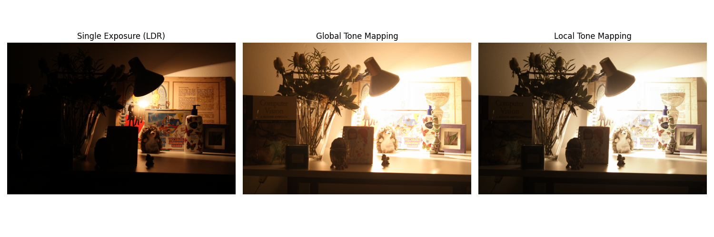
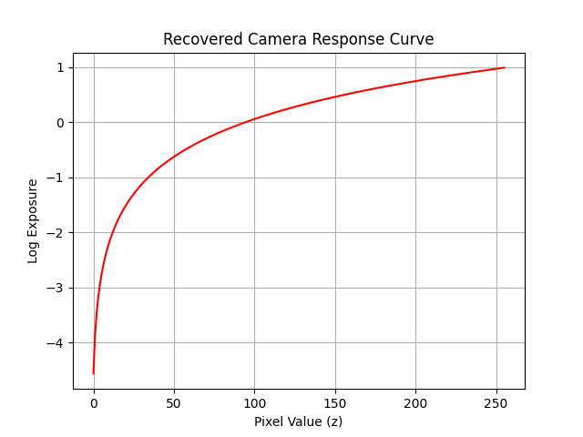
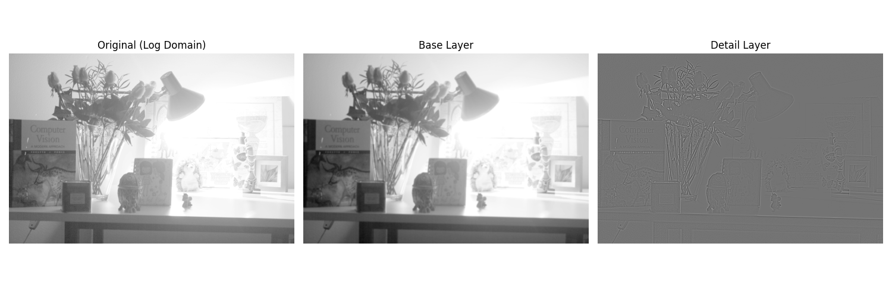
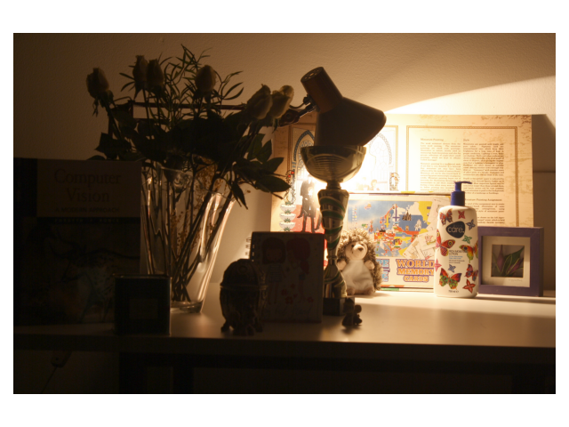
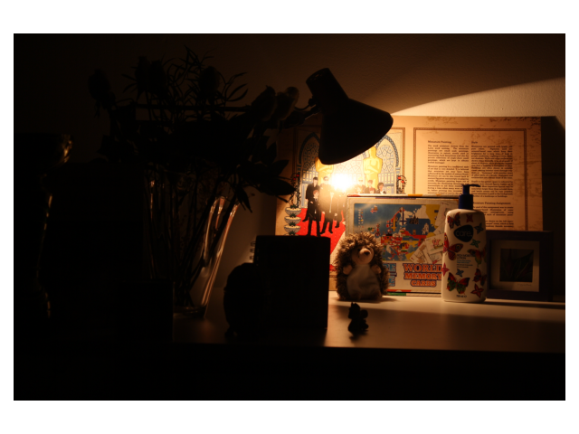
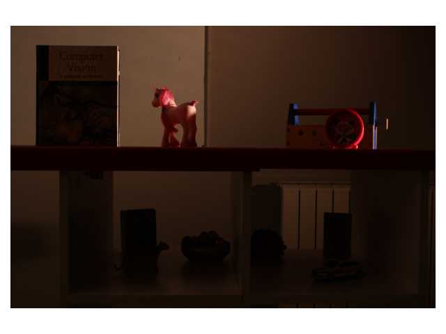
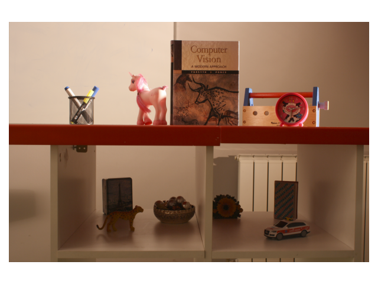
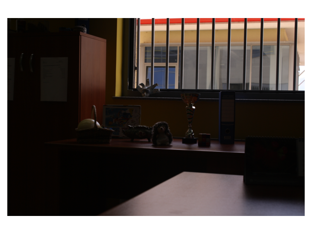

Introduction
This project focuses on High Dynamic Range (HDR) imaging and tone mapping techniques. The objective is to create HDR images by combining multiple Low Dynamic Range (LDR) exposures, reconstructing an HDR radiance map, and applying tone mapping operators to produce visually appealing images suitable for display.
Original Image
Project Goals
The primary goal of this project is to develop a robust HDR imaging pipeline that effectively combines multiple exposures to capture the full dynamic range of a scene. The specific objectives include:
- Recovering the camera response curve
g(Z)to accurately map pixel values to log exposures. - Constructing a stable HDR radiance map by combining multiple exposures.
- Implementing both global and local tone mapping operators to compress the dynamic range for display.
- Visualizing intermediate results like log radiance, response curves, and layer decomposition to evaluate the effectiveness of the reconstruction and tone mapping processes.
Key functions include construct_radiance_map() for merging exposures into an HDR map, decomposition() for separating base illumination from details, and local_tone_map() for enhancing local contrasts based on the decomposition.
HDR Reconstruction
HDR reconstruction involves merging multiple LDR exposures to create a high dynamic range radiance map that represents the full spectrum of light intensities in a scene. This process ensures that details in both the shadows and highlights are preserved, providing a comprehensive representation of the scene's lighting.
The HDR reconstruction process consists of these steps:
- Loading and Normalizing Images: The
load_imgs()function loads the LDR images and normalizes their pixel values to a range of [0, 1]. - Constructing the HDR Radiance Map: The
construct_radiance_map()function applies recovered camera response curves and weighting functions to combine pixel values across exposures. This involves:- Applying weighting functions to each pixel based on its intensity to give more importance to well-exposed pixels.
- Calculating the weighted average of pixel values across exposures to estimate the true radiance values.
- Exponentiating the log radiance to obtain the final HDR radiance map.
- Visualizing Log Radiance: The
radiance_map()function computes the luminance from the HDR map and visualizes its logarithm to highlight the dynamic range captured.

Input Images for HDR Reconstruction

Log Radiance (Luminance) Visualization
Radiance Map and Camera Response Curve
The HDR radiance map is constructed by combining pixel values from multiple exposures. A critical component of this process is recovering the camera response curve g(Z), which maps observed pixel values to log exposures. This curve is essential for accurately estimating the true radiance of each pixel in the scene.
The response_curve() function calculates the camera response curve using a weighted least squares approach. It balances data fidelity from multiple exposures with smoothness constraints to ensure a stable and accurate response curve. The resulting curve is then plotted to visualize the mapping from pixel values to log exposures. For more details, refer to the original work by Debevec and Malik (1997).

Recovered Camera Response Curve
Tone Mapping
Tone mapping is the process of compressing the high dynamic range radiance map into a format suitable for display devices, which have a limited dynamic range. This step is crucial for maintaining the visual details and contrast of the original scene in the final image.
Global Tone Mapping
Global tone mapping applies a uniform transformation to the entire HDR image to compress its dynamic range. The global_tone_map() function implements this by:
- Calculating the luminance of each pixel to determine overall brightness.
- Applying a logarithmic scaling to luminance values below a certain threshold to preserve details in darker regions.
- Using linear scaling for luminance values above the threshold to prevent overexposure in brighter areas.
- Adjusting each color channel proportionally based on the scaled luminance to maintain color balance.
- Clipping the final image values to ensure they fall within the displayable range [0, 255].
This approach provides a quick and straightforward method to reduce dynamic range but may sometimes result in loss of local contrast and detail.

Comparison: Single Exposure, Global Tone Mapping, and Local Tone Mapping
Decomposition for Local Tone Mapping
Local tone mapping enhances local contrast by decomposing the log intensity image into base illumination and detail layers. The decomposition() function achieves this by applying a bilateral filter to separate the image into a smoothly varying base layer and a high-frequency detail layer. This separation allows for independent adjustment of global and local contrast, resulting in a more visually appealing image. This technique is based on the methodology presented by Durand and Dorsey (2002).

Original Log Domain, Base Layer, and Detail Layer
Local Tone Mapping
The local_tone_map() function performs local adjustments based on the decomposed base and detail layers to enhance local contrast and preserve scene details. This results in an image that retains both global brightness and local intricacies, offering a balanced and visually appealing representation of the original scene's dynamic range.

Final Local Tone Mapped Image
Before & After
The following images demonstrate the effectiveness of the HDR reconstruction and tone mapping processes by showcasing the original image alongside the final tone mapped result.

Original Image
Final Local Tone Mapped Image
The display_imgs() function was utilized to present these comparisons clearly, ensuring that the enhancements achieved through tone mapping are easily observable.
Other Examples

Original Image (1)

Final Local Tone Mapped Image (1)

Original Image (2)
Final Local Tone Mapped Image (2)
Conclusion
The project successfully implemented HDR reconstruction and tone mapping techniques,
demonstrating the ability to create visually appealing images that preserve the
dynamic range and local details of a scene. By leveraging methodologies
from
Debevec and Malik (1997) and
Durand and Dorsey (2002),
and utilizing key functions such as construct_radiance_map(), decomposition(), and local_tone_map(), the project achieved robust and high-quality HDR images suitable for various display applications.